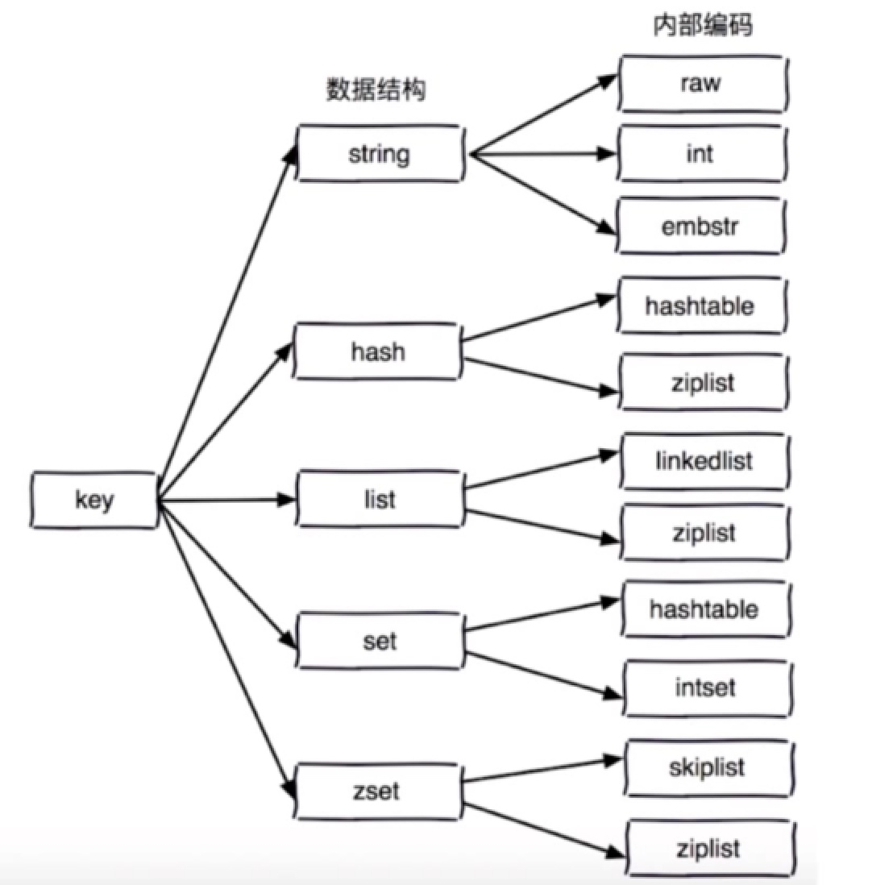
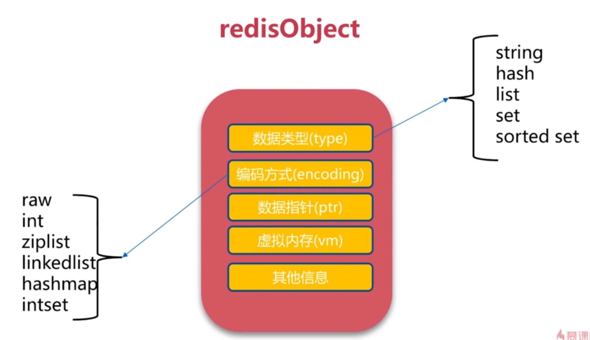
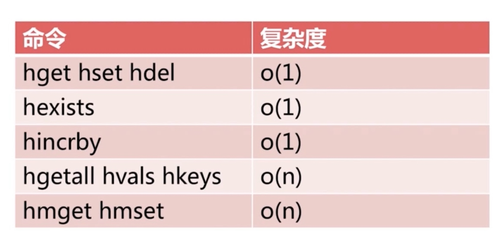
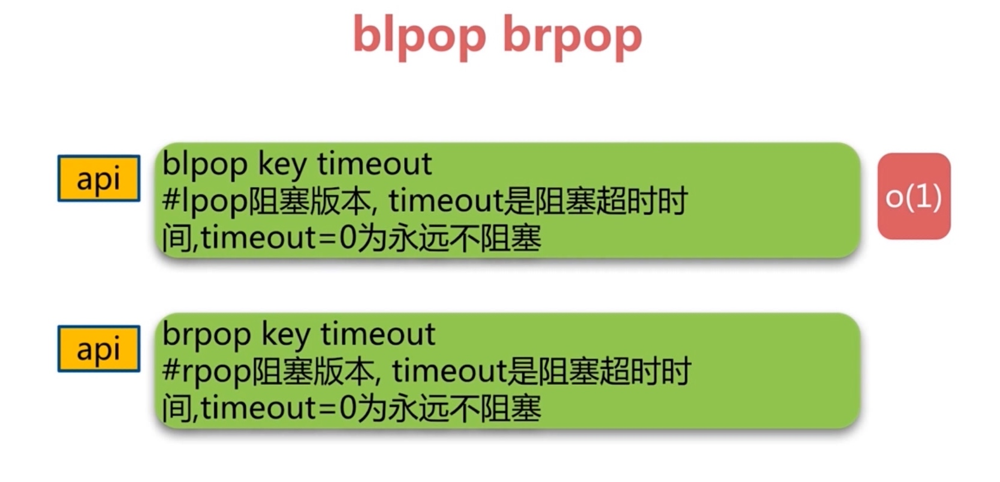
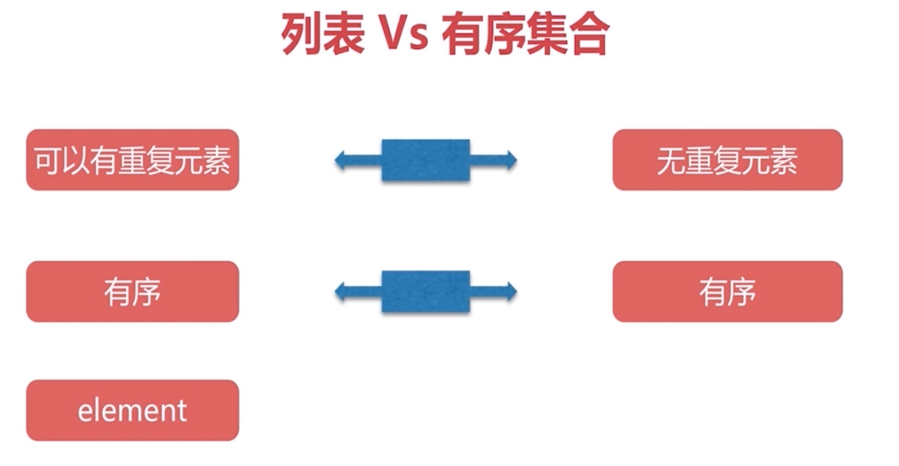

通用命令
- keys
- dbsize
- exists key
- del
- expire key seconds
- type key
keys使用
- 热备从节点
- scan scan 0 match a* count 1000
expire&ttl&persist
- expire key seconds
- ttl key -1 表示不过期 -2 表示key不存在
- persist key
数据结构和内部编码
- 
- 
单线程为什么快
- 纯内存
- 非阻塞IO
- 避免线程切换和竞态消耗
单线程注意事项
- 一次只运行一条命令
- 拒绝长慢命令
- keys flushall flushdb slow lua script multi/exec opreate big value
- fsync file descriptor
- close file descriptor
字符串
- 缓存
- 分布式锁
- 计数器
- incr decr incrby decrby
- 网页访问量 incr user_id:pageview
- set key value 不管key是否存在都设置
- setnx key value 不存在才设置
- set key value xx 存在才设置
- mget k1 k2 k3
- mset k1 k2 k3
- getset 设置新值获取旧值
- append key value
- strlen 长度
- incrbyfloat
- getrange
- setrange
hash
- hset
- hset
- hdel
- hexists 是否存在
- hlen 获取field数量
- hmset key
- hmget key
- 页面访问 hincrby userinfo pageview count
- hgetall
- hvals
- hkeys
- string hash对比
| get | hget |
|---|---|
| set setnx | hset hsetnx |
| del | hdel |
| incr incrby decr decrby | hincrby |
| mset | hmset |
| mget | hmget |
- 设置用户属性方案对比
| 命令 | 优点 | 缺点 |
|---|---|---|
| string v1 | 编程简单 节约内存 | 序列化开销 设置属性要操作整个数据 |
| string v2 | 直观 可以部分更新 | 内存占用较大 key比较分散 |
| hash | 直观 节省空间 可以部分更新 | 编程复杂 ttl二级属性不好控制 |
- 总结
- 
list
- 有序
- 可以重复
- lpush list a b c c->b->a
- rpush list a b c a->b->c
- lrange list 0 3 遍历pos a->b->c
- linsert list after c d a->b->c->d
- linsert list before a -1 -1->a->b->c->d
- rpop list -1->a->b->c
- lpop list a->b->c
- lrem

- lrem list2 -2 c 从右到左
- lrem list2 2 c 从左到右
- lrem list2 0 c 全部删除
- ltrim list2 0 5 保留指定范围内的元素
- ldel会阻塞redis, ltrim不会
- lindex list2 0 获取置顶索引的值
- llen 列表长度
- lset 设置指定索引值
- blpop
- prpop
- 
- 组合功能

集合
- 无序
- 无重复
- 集合间操作
- sadd
- srem
- scard userinfo 集合长度
- sismember userinfo name 集合成员是否存在
- srandmember userinfo 随机访问集合成员
- smembers userinfo 全部成员
- spop随机弹出成员
- sdiff
- sunion
- sinter
- 实战

zset

- 
- zadd key score ele O(logN)
- zrem key ele
- zscore key ele 返回分数
- zrank key ele 获取排名
- zrange key 0 -1 打印全部的ele
- zrange key 0 -1 withscores 打印全部的ele和scores
- zrangebyscore key min max 指定区间的ele
- zremrangebyrank 根据排名删除
- zremrangebyscore 根据分数范围删除
- zrevrnak
- zrevrange
- zrevrangebyscore
- zinterstore
- zunionstore